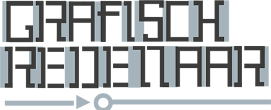
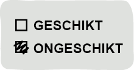
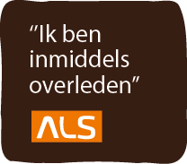
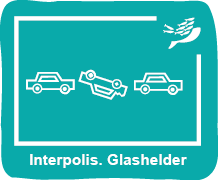
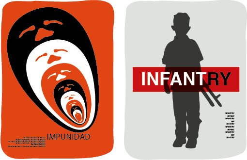
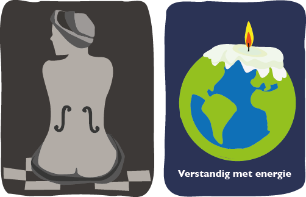
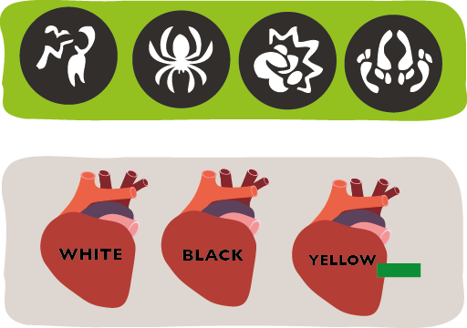
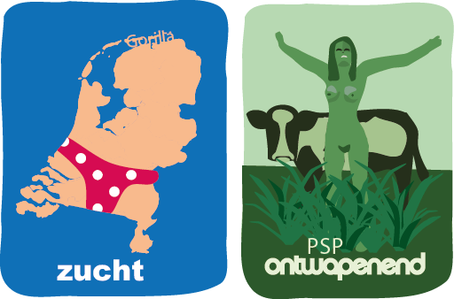
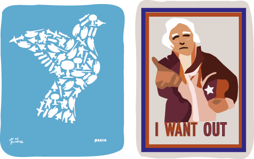

3. Hoe laten mensen zich beïnvloeden door visuele retorica?
In het werk van grafisch ontwerpers draait het om de communicatie van een bepaalde gedachte, hierbij speelt argumentatie een rol. De manier waarop deze argumentatie in elkaar zit blijkt zowel invloed te hebben op het onthouden van de boodschap als het waarderen van de boodschap. Retorica lijkt daarom erg van belang in een ontwerpproces dat moet leiden tot een overtuigend resultaat. In het komende hoofdstuk zal ik onderzoeken hoe retorica kan bijdragen aan visuele communicatie. Hieronder volgt de definitie.
Definitie volgens Van Dale middelgroot woordenboek Nederlands:
Re·to·ri·ca [de] (taalk.) Leer van de welsprekendheid.
‘Ars Retorica’ betekend letterlijk ‘welsprekendheid’, maar wordt ook wel ‘kunst van het overtuigen’ genoemd en bestaat al eeuwenlang. Aanvankelijk had het begrip retorica alleen betrekking op het verbale domein, maar met de opkomst van de hedendaagse beeldcultuur is ook de visuele retoriek ontstaan. Bijvoorbeeld: een foto van een verminkte hand ergens in een krant of tijdschrift rond de jaarwisseling is niet neutraal informatief, maar wil de kijker een richting op sturen. In dit hoofdstuk zal ik de vraag stellen naar de overtuigingskracht van beeld an sich en naar de middelen die in beelden kunnen worden ingezet om mensen te overtuigen van een bepaalde boodschap.
§3.1 Het gebruik van pathetische middelen
Mensen kunnen op verschillende manieren ervan overtuigd worden om een bepaalde overtuiging aan te hangen. Het komt hierbij neer op het beïnvloeden en veranderen van de attitude van deze mensen. We spreken van incongurentie als binnenkomende informatie niet overeenstemt met bestaande opvattingen. Incongruentie kan bijdragen aan het trekken van de aandacht van mensen, wanneer deze mensen de afwijking begrijpen, kunnen ze deze als grappig, choquerend of zelfs afschrikwekkend ervaren.
Het effect van de afwijking zal uiteindelijk zorgen voor een positieve of negatieve attitude ten opzichte van de boodschap. Het veroorzaken van incongurentie is mogelijk met rationele argumenten, maar ook door in te spelen op de emoties van mensen. Bij het inspelen op het gevoel van een bepaalde groep mensen, spreken we van pathetische middelen. In de klassieke oudheid werden pathetische middelen al in redevoeringen gebruikt. In hedendaags ontwerp is dit nog steeds het geval. Er zijn drie verschillende soorten pathetische middelen: Ethos, Pathos en Logos.
Bij Ethos komt het neer op het schermen met de kwaliteiten van je boodschap. Hierbij is het vaak al voldoende om de betekenis van bepaalde belangen of waarden op emotionele wijze te benadrukken. Het publiek legt dan zelf wel de gewenste verbinding met het standpunt dat ter discussie staat.
|  | De ‘geschikt, ongeschikt’ campagne van de landmacht is hier een voorbeeld van. |
Wanneer er gebruik wordt gemaakt van Pathos, wordt er ingespeeld op de emoties van het publiek.
|  | De campagne van stichting ALS is een voorbeeld van Pathos. Anderevoorbeelden van pathos zijn wervings-campagnes voor goede doelen waarop zielige kinderen of stervende dieren te zijn. |
Logos beroept zich op een logische redenering. Bij logos worden de feiten beschreven die het onderwerp van de spreker ondersteunen. Omdat gegevens moeilijk te manipuleren zijn, vooral indien ze uit een betrouwbare bron komen, zou logos een publiek met gemak kunnen overtuigen.
|  | Waar pathos een beroep doet op het hart, doet logos een beroep op de ratio. Vaak worden oorzaken en gevolgen van bepaalde keuzes worden zichtbaar gemaakt, zoals roken, of niet verzekerd zijn, zoals Interpolis doet. |

§3.2. Stijlfiguren
Naast de indeling van retorische middelen in ethos, pathos en logos, bestaat er een uitgebreide verzameling stijlfiguren of retorische vormen die in de retorica voorkomen . Aristoteles en Quintilianus beschreven al talloze stijlfiguren en hun functies. Vrijwel alle stijlfiguren zijn gebaseerd op met een zekere vorm van regelmatigheid of onregelmatigheid. Hieronder een aantal voorbeelden die visueel kunnen worden toegepast.
Repetitio
Herhaling van een beeld of boodschap zorgt dat die beter onthouden wordt: het wordt de kijker ‘ingepeperd’. In een ontwerp hier onder, van van Andrew Lewis, ia sprake van repetitio: herhaling zet de voorstelling kracht bij.
Contrast
Het visualiseren van tegenstellingen is voor ontwerpers een buitengewoon sterk middel om aandacht te trekken. Contrasten laten verschillen zien tussen gedachten, mensen of objecten. In het voorbeeld hier onder is een affiche te zien van Harry Pearce over kindsoldaten. De combinatie van beeld en tekst levert een sterk contrast op.

Metafoor
Visuele metaforen Verduidelijken een idee door een beschrijving van iets anders met gelijke karakteristieken. In de foto van Man Ray (Le violon d’Ingres, 1924) wordt het model vergeleken met een viool of cello door de ‘gaten’ uit een viool toe te voegen. Ook worden er vaak metaforen gebruikt bij vraagstukken rondom milieu, Zoals in het affiche hier onder van Mccan-erickson.

Synecdoche
Een Synecdoche is een situatie waarbij een deel staat voor het geheel. Bij de symbooltjes van kijkwijzer is er gebruik gemaakt van Synecdoche.
Vergelijking
Verschillende objecten worden vergeleken met elkaar om een statement te maken. Vergelijking kan bruikbaar zijn om verschillen te laten zien, of misschien juist overeenkomsten, zoals in de reclamecampagne van het merk Benneton, zie hiernaast.

Personificatie
Bij personificatie worden objecten of dieren worden als personen voorgesteld, dit is een middel dat niet zelden in de reclame gebruikt wordt. Een voorbeeld is een beeld van Gorilla met als onderwerp obesitas. Het standpunt dat we in Nederland met z’n allen te dik zijn wordt verduidelijkt door Nederland als land te dik voor te stellen.
Hyperbool
De hyperbool is het stijlfiguur van de sterke overdrijving, soms in de vorm van beeldspraak of clichés. Het effect is dat de bewering bijzondere nadruk krijgt. Het historische ontwerp van de PSP uit 1971 zou onder het kopje hyperbool geschaard kunnen worden.

Oxymoron
Bij een Oxymoron worden twee zaken die elkaar tegenspreken tegelijkertijd gebruikt. Er is sprake van een schijnbare tegenstelling (Paradox). In het ontwepr van Luba Lakova is een duif te zien die bestaat uit oorloggerelateerde objecten. Omdat duiven symbool staan voor vrede is dit tegenstrijdig.
Pastiche
Pastiche is nabootsing van het werk van een bekende auteur. Vooral in de kunst is Pastiche erg populair. Pastiche ontleent zijn kracht aan het plezier van de herkenning. Een voorbeeld hiervan is het ontwerp van James Montgomery Flagg uit 1917 is gebruikt door ‘Committee to help unsell the war’.


§3.3. De grafisch ontwerper als
visueel redenaar.
Om tot goede visuele retorica te komen is het noodzakelijk om het te verdedigen standpunt eerst te analyseren, vaak kom je dan tot de conclusie dat de kracht van de ene opvatting de zwakte is van de andere opvatting en vice versa. Met het contrast tussen verschillende opvattingen kan door middel van visuele stijlfiguren geëxperimenteerd worden. Ook kunnen er pathetische middelen gebruikt worden om het publiek te overtuigen.
Door middel van stijfiguren kan een ontwerper bepaale aspecten van de over te brengen informatie uitlichten of juist weglaten. De samenstelling van een compositie kan hierbij ook gezien worden als retorisch middel, en kan bruikbaar zijn om in te spelen op datgene dat het publiek interesseert of emoties losmaakt bij het publiek. Het experimenteren met zowel pathetische middelen als stijlfiguren kan een waardevolle bijdrage leveren aan de overtuigingskracht van grafisch ontwerp.